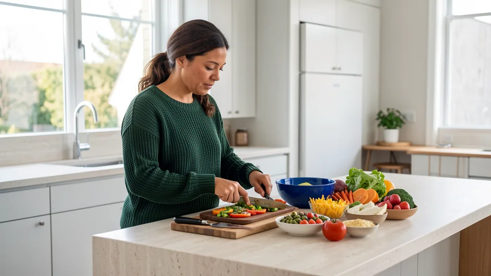

Metabolismo, longevidad y bienestar diario
Bienestar que encaja en tu ritmo.
Descubre rutas claras para construir hábitos, organizar tus prioridades y cuidar lo que importa, con una experiencia diseñada alrededor de ti.
Tu prioridad. Tu ritmo. Tu manera de cuidarte.
Programas Mereon
Empieza por lo que quieres sentir.
Explora rutas de bienestar organizadas por prioridad y estilo de vida. Cada programa reúne ideas, herramientas y estructura para ayudarte a crear una rutina propia.
9 programas
 Ruta destacada
Ruta destacadaMetabolismo
Balance Metabólico
Una ruta para ordenar alimentación, movimiento, descanso y constancia.
- Mapa semanal de hábitos
- Objetivos simples y flexibles

Bienestar diario
Base Diaria
Pequeños rituales para sumar intención a tus días sin complicarlos.
- Plan semanal sencillo
- Ideas de pausas y movimiento

Longevidad
Longevidad Cotidiana
Convierte una visión de largo plazo en elecciones que caben en el presente.
- Prioridades mensuales
- Lecturas y prácticas seleccionadas

Sueño y calma
Sueño + Calma
Organiza un cierre del día con espacio para la pausa y la calma.
- Ritual nocturno adaptable
- Prácticas breves de relajación

Movimiento
Movimiento Diario
Más movimiento posible, con sesiones breves que se adaptan a tu agenda.
- Secuencias de movilidad
- Ritmo semanal personalizable

Recuperación
Recuperación Activa
Equilibra esfuerzo, movilidad y recuperación dentro de una misma rutina.
- Calendario de recuperación
- Guías para días activos

Cabello y piel
Ritual Cabello + Piel
Dale orden y constancia a una rutina de autocuidado que se sienta tuya.
- Ritual visual paso a paso
- Calendario mensual editable

Bienestar integral
Bienestar Integral
Reúne energía, descanso, movimiento y organización en una visión completa.
- Planificador de prioridades
- Biblioteca de rutinas
Energía cotidiana
Energía en Ritmo
Organiza tus momentos de enfoque, pausa y movimiento a lo largo del día.
- Mapa diario de energía
- Pausas con intención
Elige tu nivel de estructura
Una experiencia tan ligera o completa como quieras.
Compara el tipo de acompañamiento que mejor encaja con tu momento. Puedes empezar simple y explorar rutas con más profundidad cuando lo necesites.
Esencial
Lo importante, sin ruido.
- Una prioridad principal
- Rutina semanal simple
- Herramientas fáciles de usar
Guiado
Más claridad para avanzar.
- Objetivos organizados
- Ritmo y recordatorios
- Contenido seleccionado
Integral
Una visión conectada.
- Varias prioridades
- Planificación completa
- Seguimiento de hábitos
Guía de exploración
Dos elecciones. Una ruta más clara.
Elige tu prioridad y el estilo de rutina que prefieres. Mereon te mostrará programas afines para que compares con calma.
- Respuestas rápidas y sencillas.
- Recomendaciones basadas en tus preferencias.
- Un atajo directo a los programas relevantes.
Cómo funciona
Del descubrimiento a una rutina propia.
Navega a tu manera o deja que la guía acorte el camino. La experiencia está pensada para ayudarte a comparar sin abrumarte.
- 01
Explora
Descubre categorías a partir de lo que quieres priorizar.
- 02
Afina
Elige cuánto orden y acompañamiento prefieres en tu rutina.
- 03
Compara
Revisa programas afines con información directa y fácil de leer.
- 04
Hazlo tuyo
Vuelve a tus opciones y encuentra la combinación que mejor te representa.
La experiencia Mereon
Cuidarte también debería sentirse bien.
Creemos en experiencias serenas, información directa y decisiones sin presión. Cada detalle está pensado para hacer del bienestar una parte más natural de tu vida.
Claridad primero
Lenguaje simple y opciones fáciles de comparar.
Diseño con intención
Una experiencia visual cálida, práctica y consistente.
Tu ritmo importa
Rutas flexibles para distintas prioridades y momentos.
Bienestar para la vida real
Menos perfección. Más constancia.
Tu bienestar no necesita verse como el de nadie más. Mereon reúne caminos distintos para ayudarte a encontrar una rutina que se sienta posible, personal y duradera.
Descubrir programasPreguntas frecuentes
Antes de empezar.
Respuestas breves para navegar las colecciones y encontrar una ruta que encaje contigo.
¿Por dónde empiezo?
Puedes explorar el catálogo por categoría o usar la guía para relacionar una prioridad general con los programas más afines.
¿Cómo se organizan los programas?
Cada ruta combina una prioridad de bienestar con un nivel de estructura: esencial, guiado o integral.
¿Puedo explorar más de una categoría?
Sí. Los filtros te permiten recorrer todas las categorías y comparar enfoques complementarios a tu propio ritmo.
¿Qué información usa la guía?
Solo las opciones generales que eliges en pantalla, como prioridad y estilo de rutina. No hay campos de texto ni solicitud de información personal.
Tu bienestar, a tu manera
Encuentra una rutina que sí se sienta tuya.
Empieza por una prioridad, compara posibilidades y descubre una forma más clara de cuidarte.